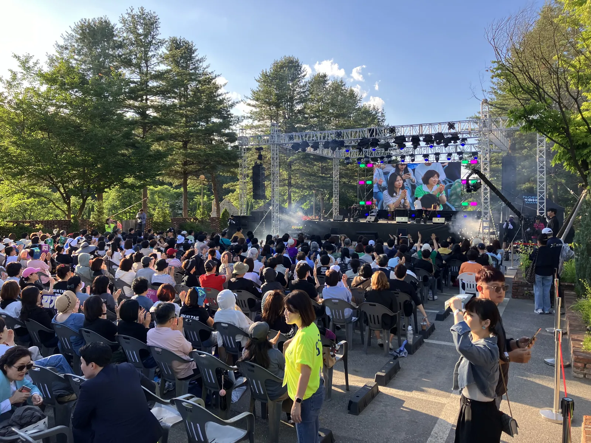
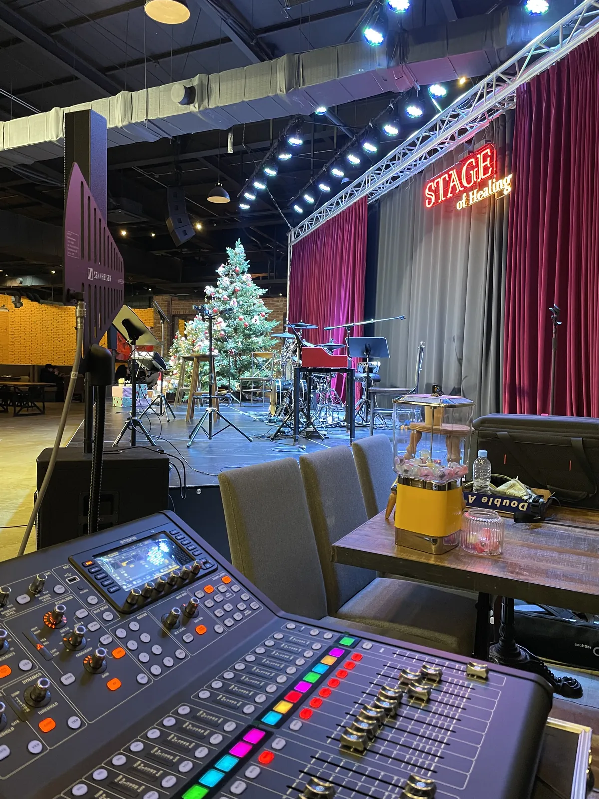

가평 송년 콘서트 음향은 「출연진 순서표」와 「믹서 자리」 두 가지를 먼저 정하면 나머지가 따라옵니다. 연말 공연은 인사 · 시상 · 공연이 섞여 마이크와 조명이 자주 바뀌기 때문입니다. 제이식스미디어가 가평 더스테이힐링파크에서 고객초청음악회 · 송년 콘서트 음향을 맡았던 현장을 바탕으로, 연말 공연 담당자가 챙길 것을 정리했습니다.

- 출연진마다 인원 · 악기 · 마이크 수 · 음원을 적은 순서표를 먼저 받아 음향 구성을 짭니다.
- 믹서 자리는 무대가 잘 보이고 객석 소리를 직접 들을 수 있는 곳으로 정합니다.
- 연말 공연 조명은 인사 · 시상 때 밝게, 공연 때 분위기 있게 — 순서마다 바뀌는 시점을 미리 맞춥니다.
- 실내 공연은 울림을, 야외 공연은 날씨와 전기를 먼저 확인합니다.
1. 가평 송년 콘서트 음향, 순서표부터 받습니다
송년 콘서트는 대표 인사, 감사패 전달, 초청 가수 공연, 경품 추첨처럼 성격이 다른 순서가 이어집니다. 순서마다 마이크 수와 음원, 무대 위 사람 수가 달라서 순서표가 곧 음향 · 조명 설계도가 됩니다.
| 순서(예시) | 무대 위 | 음향 | 조명 |
|---|---|---|---|
| 오프닝 영상 · 입장 | 사회자 | 영상 소리 · 입장 음악 | 어둡게 시작 → 밝게 |
| 대표 인사 | 인사자 1명 | 핸드 또는 스탠드 마이크 | 밝게, 얼굴 위주 |
| 시상 · 감사 순서 | 수상자 · 시상자 | 핸드 마이크 2개 · 시상 음악 | 밝게 |
| 초청 공연 | 가수 · 밴드 | 보컬 마이크 · 악기 · 모니터 | 공연 분위기 조명 |
| 마무리 | 사회자 · 전체 | 마무리 음악 | 밝게, 단체 사진 |
위 표는 예시입니다. 실제 순서와 출연진 정보를 받으면 마이크 수, 모니터, 조명 변화 시점을 그에 맞춰 짭니다. 초청 출연진 섭외와 경품은 주최 측에서 따로 준비하실 부분입니다.
2. 믹서 자리를 먼저 정합니다
음향을 운영하는 사람은 객석에서 들리는 소리를 직접 들어야 바르게 조절할 수 있습니다. 그래서 믹서 자리는 무대가 정면으로 보이고 객석 소리를 그대로 들을 수 있는 곳, 보통 객석 가운데 뒤쪽이 좋습니다. 무대 옆 구석에 두면 실제 객석 소리와 달라 조절이 어긋납니다.
- 객석 가운데 뒤쪽에 테이블 하나 크기의 자리를 비워 둡니다.
- 무대까지 신호선이 지나갈 길을 정하고, 관객 통로에는 덮개를 씌웁니다.
- 조명을 따로 운영한다면 음향 자리 옆에 나란히 둡니다(신호를 주고받기 쉽게).
- 믹서 자리에 순서표와 큐시트를 붙여 둡니다.

3. 연말 공연 조명은 순서마다 바꿉니다
조명은 인사와 시상 때는 얼굴이 잘 보이도록 밝게, 공연 때는 노래 분위기에 맞춰 색과 움직임을 더합니다. 순서가 바뀌는 시점에 조명도 같이 바뀌어야 무대가 매끄럽게 넘어갑니다. 제이식스미디어가 다루는 조명은 무빙라이트 · 빔라이트 · 레이저 · LED 바 · 스트로보이고, 무대 크기와 분위기를 알려 주시면 그에 맞춰 구성합니다.
| 장면 | 조명 방향 | 쓰는 조명(예시) |
|---|---|---|
| 인사 · 시상 | 얼굴이 잘 보이게 밝게 | 정면 조명 |
| 발라드 · 클래식 | 차분한 색, 움직임 적게 | LED 바 |
| 댄스 · 밴드 | 색 전환과 움직임 | 무빙 · 빔 라이트 |
| 피날레 | 짧고 강한 연출 | 레이저 · 스트로보(짧게) |

4. 실내인지 야외인지에 따라 달라집니다
더스테이힐링파크에서는 숲속 야외 무대의 고객초청음악회와 실내의 송년 콘서트를 모두 맡았습니다. 같은 장소라도 야외와 실내는 준비가 다릅니다. 야외는 소리가 흩어지고 날씨와 전기가 변수이고, 실내는 벽과 천장에 소리가 울리는 정도가 변수입니다.
| 구분 | 실내 공연 | 야외 공연 |
|---|---|---|
| 소리 | 울림 확인, 음량보다 방향 | 흩어짐, 객석 끝까지 닿는지 |
| 조명 | 천장 높이에 맞춰 설치 | 해 지는 시각에 맞춰 효과가 달라짐 |
| 전기 | 무대 근처 콘센트 확인 | 끌어올 위치 · 거리 확인 |
| 날씨 | 영향 적음 | 비 · 바람 대비 덮개와 보관 자리 |
5. 가평 송년 콘서트 음향 견적 문의 전에 정리할 것
남양주 별내 사무실에서 가평군청까지 차로 약 50분 · 51.2km(막히지 않을 때 기준)입니다. 저녁 공연이라면 낮에 설치와 리허설을 마칠 수 있도록 장소를 쓸 수 있는 시간을 함께 알려 주세요.
자동 견적서에서 항목을 골라 보내 주시면 확인 후 안내합니다. 견적서에는 단가가 「협의」로 나오고, 담당자가 현장 여건을 확인한 뒤 확정 견적을 보냅니다.
| 자동 견적서 항목 | 언제 고르나 |
|---|---|
| 기업행사 음향 · 조명 | 송년 콘서트 음향 · 조명 운영을 통째로 맡길 때 |
| 음향 (중형) | 실내 공연 · 밴드 공연 규모일 때 |
| 음향 (대형) | 야외 공연 · NEXO 라인어레이가 필요한 규모일 때 |
| 무빙 · 빔 라이트 | 공연 분위기 조명이 필요할 때 |
| 조명 오퍼레이터 | 순서마다 조명을 바꿔 줄 사람이 필요할 때 |
| 프로젝터 · 스크린 | 오프닝 영상 · 자막을 띄울 때 |
지역 안내는 가평 음향 · 설치 안내, 야외 공연 점검은 고양 야외 공연 음향 글에 따로 정리했습니다.
자주 묻는 질문
초청 가수 섭외도 맡길 수 있나요?
제이식스미디어는 음향 · 조명 렌탈과 운영을 하는 회사입니다. 출연진 섭외는 주최 측에서 정하시고, 출연진 정보(인원 · 악기 · 음원)를 보내 주시면 음향 · 조명을 맞춥니다.
조명만 따로 쓸 수 있나요?
자동 견적서에 무빙 · 빔 라이트, 레이저, LED 바 · 스트로보, 조명 오퍼레이터 항목이 있습니다. 무대 크기와 원하는 분위기를 알려 주세요.
리허설은 언제 하나요?
장소를 쓸 수 있는 시간에 맞춥니다. 저녁 공연이면 낮에 설치와 리허설을 마치는 것이 좋으니, 출연진 도착 시간도 함께 알려 주세요.